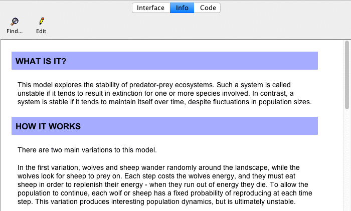
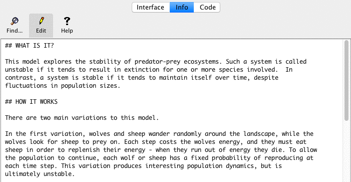

The Info tab provides an introduction to a model. It explains what system is being modeled, how the model was created, and and how to use it. It may also suggest things to explore and ways to extend the model, or call your attention to particular NetLogo features the model uses.

You may wish to read the Info tab before starting a model.
The normal, formatted view of the Info tab is not editable. To make edits, click the "Edit" button. When done editing, click the "Edit" button again.

You edit the Info tab as unformatted plain text. When you're done editing, the plain text you entered is displayed in a more attractive format.
To control how the formatted display looks, you use a "markup language" called Markdown. You may have encountered Markdown elsewhere; it is used on a number of web sites. (There are other markup languages in use on the web; for example, Wikipedia used a markup language called MediaWiki. Markup languages differ in details.)
The remainder of this guide is a tour of Markdown.
A heading begins with one or more hash marks (#). First level headings get one hash, second level headings get two, and so on up to four levels.
# First-level heading
## Second-level heading
### Third-level heading
#### Fourth-level heading
This is a paragraph. There are no spaces before the word 'This'.
This is another paragraph. The first line has two sentences.
The entire paragraph has two lines and three sentences.
Line breaks in the input,
Make line breaks in the output,
Like this.
This is a paragraph. There are no spaces before the word 'This'.
This is another paragraph. The first line has two sentences. The entire paragraph has two lines and three sentences.
Line breaks in the input, Make line breaks in the output, Like this.
For italics, surround text with underscores:
_hello, world_.
For bold, surround text with two asterisks:
**hello, world**.
You can also combine them:
_**hello**_ and **_goodbye_**
For italics, surround text with underscores: hello, world.
For bold, surround text with two asterisks: hello, world.
You can also combine them: hello and goodbye
We are about to start an ordered list.
1. Ordered lists are indented 2 spaces.
1. Subitems are indented 2 more spaces (4 in all).
2. The next item in the list starts with the next number.
3. And so on...
We are about to start an ordered list.
We are about to start an unordered list.
* Like ordered lists, unordered lists are also indented 2 spaces.
* Unlike ordered lists, unordered lists use stars instead of numbers.
* Sub items are indented 2 more spaces.
* Here's another sub item.
We are about to start an unordered list.
The simplest way to create a link is to just type it in:
http://ccl.northwestern.edu/netlogo/
http://ccl.northwestern.edu/netlogo/
If you want to use your own text for the link, here's how:
[link text here](link.address.here)
[NetLogo](http://ccl.northwestern.edu/netlogo/)
It is also possible to link to a page on your computer, instead of a page somewhere on the Internet.
Local links have this form:
[alt text](file:path)
Any spaces in the path must be converted to %20. For example, this:
file:my page.html
must be written as:
file:my%20page.html
The path is relative to the directory that the model file is in.
The easiest way to link to files on your computer is to put them into the same directory as your model. Assuming you have a file named index.html in the same directory as your model, the link would look like this:
[Home](file:index.html)
Here is another example where the file lives in a directory called docs, and docs is in the same directory as your model:
[Home](file:docs/index.html)
Images are very similar to links, but have an exclamation point in front:

(The alternate text is the text that gets displayed if the image is not found.)

Also very similar to links, it is possible to display an image on your computer instead of an image somewhere on the Internet. Assuming you have an image named image.jpg, local images look like this:

The path is relative to the directory that the model file is in.
As with local links, any spaces in the name of the file or the path must be converted to %20.
Like local links, the easiest way to display images on your computer is to put them into the same directory as your model. This example displays the image "Perspective Example.png", which resides in the same directory as this model (Info Tab Example).


Consecutive lines starting with > will become block quotations. You can put whatever text you like inside of it and you can also style it.
> Let me see: four times five is twelve, and four times six is thirteen,
> and four times seven is --- _oh dear!_
> I shall never get to twenty at that rate!
Let me see: four times five is twelve, and four times six is thirteen, and four times seven is -- oh dear! I shall never get to twenty at that rate!
To include a short piece of code in a sentence, surround it with backticks (`).
You can create a single turtle with the `crt 1` command.
You can create a single turtle with the crt 1 command.
It is also possible to have blocks of code. To create a code block, indent every line of the block by 4 spaces. Another way is to surround it with a three backticks line before and after the block. (If you don't want your code to be colored as NetLogo code, add text after the first three backticks.)
About to start the code block.
Leave a blank line after this one, and then put the code block:
; a typical go procedure
to go
ask turtles
[ fd 1 ]
tick
end
or:
About to start the code block.
Leave a blank line after this one, and then put the code block:
```
; a typical go procedure
to go
ask turtles
[ fd 1 ]
tick
end
```
About to start the code block. Leave a blank line after this one, and then put the code block:
; a typical go procedure
to go
ask turtles
[ fd 1 ]
tick
end
Superscripts and subscripts are useful for writing formulas, equations, footnotes and more. Subscripts appear half a character below the baseline, and are written using the HTML tag <sub>. Superscripts appear half a character above the baseline, and are written using the HTML tag <sup>.
H<sub>2</sub>O
2x<sup>4</sup> + x<sup>2</sup>
WWW<sup>[1]</sup>
H2O
2x4 + x2 + 42
WWW[1]
Paragraphs, lists, code blocks and other features should be separated from each other with a blank line. If you find that something isn't formatted the way you expected, it might be because you need to add a blank line before it.
To prevent a special character from being treated as markup, put a backslash (\) before it.
We use GitHub flavored newlines (https://github.github.com/github-flavored-markdown/) instead of traditional Markdown handling of newlines. This means that newlines are treated as real line breaks, instead of being combined with the previous line into a single paragraph.
Markdown has additional features that we have not shown here.
We have tested the features shown above on a variety of systems. If you use other Markdown features, you may find that they work on your computer, or not. Even a feature that works on your computer might work differently, or not work at all, for someone with a different operating system or Java virtual machine.
If you want all NetLogo users to be able to read your Info tab, use only the features shown above.
More information about Markdown is at http://daringfireball.net/projects/markdown/. For rendering Markdown, NetLogo uses the Flexmark-java library.